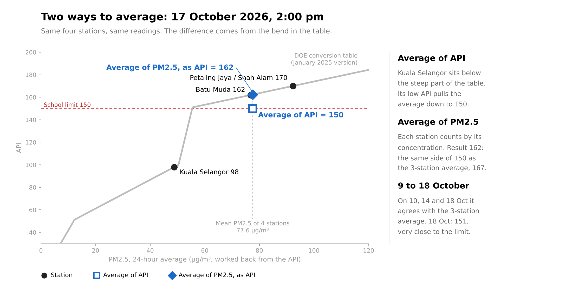

Other Ways to Average REFERENCE
The official 4-station average, compared with two other ways to combine the stations.
This page is for reference only. It does not decide school closure. The school rule uses the official average of the four DOE API readings at 2:00 pm, as on the main page.
1The three methods
- Official average: the plain average of the four stations' API numbers. This is the school rule.
- PM2.5 method: each station's API is turned back into PM2.5 with the DOE table (January 2025 version). The four PM2.5 values are averaged, and the average is turned into an API number again.
- Three stations: the plain average of Batu Muda, Petaling Jaya and Shah Alam, without Kuala Selangor.
Why the first two can differ: the DOE table has a steep part between API 100 and 150. A station in or below that part counts more in an average of API numbers than its PM2.5 would suggest. Averaging PM2.5 first removes this effect.

2Day by day, at 2:00 pm
Each column applies the same school rule to its own numbers: closed after one day at 180 or above, or after three days in a row at 150 or above; reopened after a day below 150. * = on the other side of 150 or 180 than the official average.
| Loading… |
The small line under each number is the rule's result for that method (count of high days, or closed and reopened). It ignores weekends and holidays, like the count on the main page.
3Hour by hour
The same three methods for every hourly DOE reading. Each DOE hourly reading is already a 24-hour average, updated every hour, so these lines move slowly. The sensor's 24-hour average is on the same footing. Its 1-hour reading is in the table only, because it is not averaged over 24 hours.
Table: the last 24 hours
* = on the other side of 150 or 180 than the official average. The sensor's 24-hour average needs at least 18 hours of data.
4Check with the nearby sensor
The low-cost sensor in Rawang Anggun is about 2.7 km from the school. Its 24-hour average, on the same DOE scale, shows which method is closest to the air near the school. Not calibrated: such sensors often read high in humid air.
| Loading… |
5Limits
- The PM2.5 method assumes that PM2.5 sets each station's API. This is true in haze. On clean days another pollutant can set the API, and the PM2.5 worked back from it is then too high.
- DOE publishes whole API numbers. Above API 150 one API point is about 1.9 µg/m³ of PM2.5, so a result close to a limit can change with one point.
- The PM2.5 method still meets the steep part of the table, but only once, for the average. When the four-station PM2.5 average is between 50.5 and 55.4 µg/m³, a small change moves the result a lot. Example: on 18 October the PM2.5 method gave 151 at 2:00 pm, 134 at 4:00 pm and 151 again at 6:00 pm, while the four-station PM2.5 average moved only between about 54 and 56 µg/m³.
- The results depend on the DOE table. If DOE changes the table, the PM2.5 method changes too.
- The PM2.5 method makes a low station count less. It does not remove the real difference: Kuala Selangor often has less PM2.5 than the other three.
- One sensor, not calibrated, only a few days of data. It cannot settle the question yet.